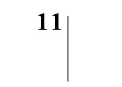
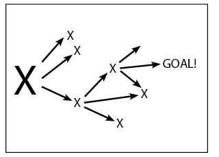
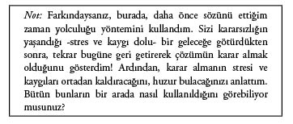

Toparlıyoruz
Şimdi sıra, bütün bu bilgileri işinize yarayacak şekilde bir araya getirmeye geldi. Bu bölümde, tüm bilgilerin özünü bir arada sunabilmek amacıyla, hızlı bir özete ve gelecekteki ikna girişimlerinizin olabildiğince başarılı olmasını sağlayacak bir not defterine yer vereceğiz.
Gizli İkna Taktikleri’nin temel amacı, hedeflediğiniz kişiyi bulunduğu yerden sizin olmasını istediğiniz yere taşıyabilmektir. Buna, “Karar Yönlendirmesi” adını veriyoruz.
Bunu biraz açalım: İyi bir gözlemci olmamız durumunda, hedefimizin ikna girişimimizin başlangıç aşamasında bulunduğu konum hakkında isabetli öngörülerde bulunabiliriz. Ardından, sonuç odaklı düşünce sistemini kullanarak hedefimizi nereye ulaştırmak istediğimize karar verdikten sonra bizim gibi düşünmesi konusunda kısa sürede ikna etme şansımız oldukça yüksektir.
Birazdan kısa bir karar ağacıyla karşılaşacaksınız. Her nokta bir karardır. Amacımız; bu kitaptaki gizli ikna tekniklerini ve taktiklerini kullanarak, karşımızdaki insanın kararlarını istediklerimizi elde edecek şekilde kontrol ederek yönlendirmek olmalıdır.
Şimdi Çizim 11.1’e bakalım.
Çizimden de anlayabileceğiniz gibi, hedefinizin, sürecin her aşamasında alabileceği birçok karar vardır. Sizin tercihiniz ise, elbette ki sizi arzuladığınız sonuca ulaştıracak yolu seçmesidir. Hedefiniz sürecin herhangi bir aşamasında yanlış kararlar alabilir. İşte bu yüzden, bu kitabı her an elinizin altında bulundurmalısınız. Gizli ikna tekniklerini ve taktiklerini hiçbir zaman için aklınızdan çıkarmamalısınız.

Çizim 11.1 Gizli İkna Teknikleri ve Taktikleri Aracılığıyla Karar Alma Süreci
Bir insanı ikna edebilmek, genellikle adım adım uygulanabilecek sihirli bir süreç değildir. Kimi zamanlarda ve koşullarda iyi kullanılan bir teknik sorunlarınıza çare olabilir. Ancak, genellikle, “geriye doğru düşünce” sistemini uygulamanız gerekecektir. Bir başka deyişle, işe, gerçekleştirmek istediğiniz amacı düşünerek başlamalı, ardından şu an bulunduğunuz konuma doğru adım adım geriye doğru gitmelisiniz. Bu çaba gerektiren bir iştir. Ancak, gizli ikna taktikleri konusunda kolaylıkla başarı kazanarak ödülünüzü fazlasıyla aldığınızı göreceksiniz. Karşınızdaki insan ise olup bitenlerin ayırdına bile varamayacaktır. Aldığı kararların kendisine ait olduğunu sanacaktır. (Oysa siz direksiyonda kimin oturduğunu biliyorsunuz.) Bildiğiniz gibi, insanlar kendi kararlarına, sizin önerilerinizden daha sadık kalır. Dolayısıyla, başarının sırrı, gizli ikna taktiklerini kullanarak hedefinizi amacınıza doğru yönlendirmenizdir.
Kararlar Hakkında Size Bir Çift Sözümüz Var
Karar vermenin tek yolu vardır. Yapmak. Ardından kararınızı gerçekleştirmek için elinizden geleni yapmalı, güçlü ve azimli bir şekilde davranmalısınız. Geriye dönüp bakmayın. Gemileri yakın, sizi bu noktaya getiren köprüleri atın. Geri dönüş yoktur. Bir karar aldığınız andan itibaren, gerçekleştirmek için elinizden geleni yapmaya başlayın.
Zor bir karar aldığınız an, kendinizi çok daha iyi hissetmeye başlayacaksınız. O andan itibaren tüm dikkatinizi o kararı gerçekleştirmeye odaklamalısınız. Kararınızı gerçekleştirmek üzere harekete geçmek, size güç ve hız kazandıracaktır.
Karar alamaz duruma gelirseniz, büyük bir stres yaşamaya başlarsınız. Kararı ne kadar ertelerseniz -işleri ne kadar sürüncemede bırakırsanız- huzursuzluğunuz ve rahatsızlığınız da o kadar artar.
Kararsızlık, strese yol açan, değerli enerjinizi tüketen bir kısır döngü yaratır. Strese, sıkıntıya ve korkuya neden olur. Kısa süre içerisinde zihninizdeki tablo giderek olumsuz bir hal alır. Bu sayede daha da kaçarsınız. İşleri iyiden iyiye sürüncemede bırakırsınız. Bu bitmek bilmez bir kısır döngüdür.
Bu kısır döngüden kurtulmanın tek yolu, bir karar alarak o karara sadık kalmaktır. Ancak, o zaman kaygılar ve stres ortadan kalkabilir. Bu sayede her şey daha berrak, daha kolay ve daha heyecan verici bir hal alır. Dolayısıyla, yapmanız gereken, karar alarak harekete geçmektir.

Bu bölümün ardından gizli ikna notlarının yer aldığı bir ek bölüm bulacaksınız. Bu kitaptaki en önemli kavramları bir araya getiren bu notlar, bu kavramları, ikna girişimlerinizde kullanmanızı sağlayacaktır. Bu sayfalar yardımıyla, hedeflediğiniz kişinin, sizi hedefinize ulaştıracak doğru kararlar almasına yardımcı olabileceksiniz. Önemli satışlarınız, mülakatlarınız, pazarlıklarınız, iş görüşmeleriniz öncesinde bu sayfalara başvurabilirsiniz. Bu notlar gizli ikna sürecinin tüm aşamalarını gözden geçirerek, ikna kabiliyetinizi maksimum düzeye çıkarmanıza yardımcı olacaktır.
Dilerseniz, ihtiyaç duyduğunuz an kullanmak üzere bu sayfaların fotokopilerini çekebilirsiniz.
Son Sözler
Kazanmak istiyorsunuz. İçinde bulunduğunuz durumu, koşullarınızı geliştirmek istiyorsunuz. O halde bu kitapta anlatılanları öğrenmek için çaba harcayın. Bu kitap, çevrenizdeki insanlara karşı duyacağınız merak açısından bir başlangıç noktası olsun. Bu konu, herhangi bir kitapta bütünüyle ele alınamayacak kadar karmaşıktır. Bu konuya ilgi duymaya başladığınız an, ikna sanatı konusunda kitaplardan, kasetlerden, CD’lerden, DVD’lerden oluşan geniş bir kütüphane kurmanız uzun sürmeyecektir. Bu söylediklerimiz size inanılmaz mı geldi?
Bu kitabın yazarlarının her ikisinin de kitaplıklarında konu hakkında binlerce şey bulunuyor. Biz ikimiz de insanları ve dünyanın işleyişini gerçekten merak ediyoruz. Sizi de insanlar hakkında daha fazla şey öğrenme konusuna samimi bir ilgi ve merak duymaya davet ediyoruz. Unutmayın, hayatta karşımıza çıkacak her şey, insanlar sayesinde olacaktır. Merak, en güçlü ortağınızdır!